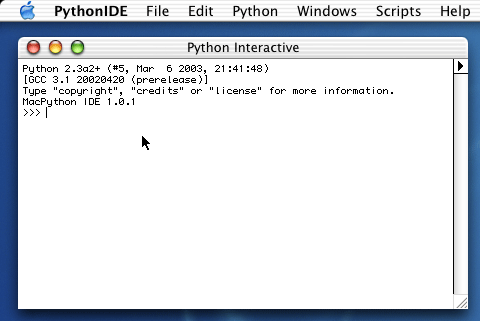
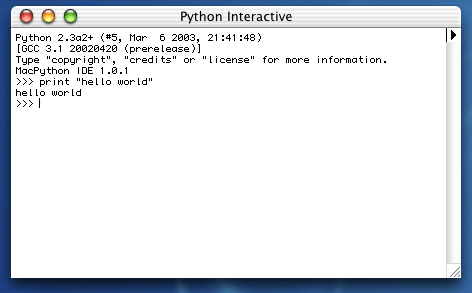
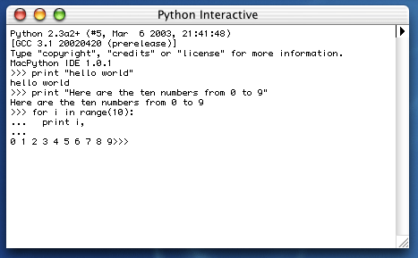
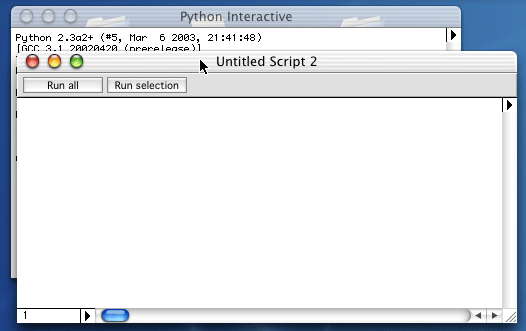
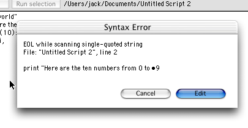

One Day of MacPython IDE Toying

|
This document gives a very basic introduction to the
MacPython Integrated Development Environment (IDE) on Mac OS. It was
written specifically for MacPython 2.3 on Mac OS X, but most of
it is applicable to MacPython-OS9 too. It is based on
"One
Day of IDLE Toying" by Danny Yoo, which you should read if
you want to use the cross-platform IDLE Python development
environment.
|
Ok, let's assume that we've already installed Python. (If not, we can
visit: http://www.cwi.nl/~jack/macpython.html
or http://python.org
and download the most recent Python interpreter. Get the Mac OSX binary
installer.) The first thing we'd like to do is actually start running it!
We can do this by opening up the IDE, which should be in Applications
under the newly-created MacPython program folder:

The IDE starts up and shows an interactive window:

If the window does not show up (because you have run the IDE before
and closed it: it remembers that between runs) open it with the Windows->Python Interactive
menu entry.
This is the interactive window to the IDE, it allows us to enter
commands directly into Python, and as soon as we enter a command,
Python will execute it and spit its result back to us. We'll be
using this interactive window a lot when we're exploring Python: it's
very nice because we get back our results immediately. If it helps,
we can think of it as a very powerful calculator.
Let's try something now! As per tradition, let's get Python to say
the immortal words, "Hello World". 
Those '>>>' signs act as a prompt
for us: Python is ready to read in a new command by giving us that
visual cue. Also, we notice that as we enter commands, Python will
give us its output immediately.
Ok, this seems pretty simple enough. Let's try a few more
commands. If we look below:

we'll see the result of running a few more commands. Don't worry
too much about knowing the exact rules for making programs yet: the
idea is that we can experiment with Python by typing in commands. If
things don't work, then we can correct the mistake, and try it
again.
If you got to this point, you now know enough to start playing
around with Python! Crack open one of the tutorials from the Python For Beginners web
page, and start exploring with the interpreter. No time limit here. *grin*
Now that we've paddled long enough, we might be asking: ok, this is
neat, but if we close down Python and start it up again, how do we get
the computer to remember what we typed?
The solution is a little subtle: we can't directly save what's in
the interpreter window, because it will include both our commands and
the system's responses. What we'd like is to make a prepared file,
with just our own commands, and to be able to save that file as a
document. When we're in the mood, we can later open that file and
"run" Python over it, saving us the time of retyping the whole
thing over again.
Let's try this. First, let's start with a clean slate by opening
up a new window.

Here's the result of that menu command:

We notice that there's nothing in this new window. What this means
is that this file is purely for our commands: Python won't interject
with its own responses as we enter the program, that is, not until we
tell it to. This is called an edit window, and it is very similar
to edit windows in other editors such as TextEdit or BBEdit.
What we wanted to do before was save some of the stuff we had
tried out on the interpreter window. Let's do that by typing (or
copy/pasting) those commands into our edit window.

Ok, we're done with copying and pasting.
One big thing to notice
is that we're careful to get rid of the ">>>"
prompts because they're not really part of our program. The
interpreter uses them just to tell us that we're in the interpreter,
but now that we're editing in a separate file, we can remove the
artifacts that the interpreter introduces.
I have added
an extra empty print statement so our output ends with a newline.
Let's save the file now. The Save command is located under the File menu:

Now that we've saved the program, how do we run the program? Use the
Run All button at the top of the editing window, or the equivalent
menu command Python->Run Window. The output will appear in a new
window called Output Window.
By the way, one thing to notice is that I made a typo: I didn't
quite copy exactly what I had entered in the interpreter window
before. Does this affect things?

Ooops. Here is an example of what Python calls a "syntax error".
Python sees that we made a typo, and warns us to take a much closer
look at our program. The designers of Python feel that having the
system point out the error is better than trying to guess at what the
programmer meant. Press the Edit button and you will be brought to
the trouble spot.
Python is often perceptive enough to direct us toward the problem,
and in this case, it's telling us that we forgot to put something at
the end of this line. In this case, we need to add a
quotation mark at the end. Let's add that in now.
Other errors, which usually occur later, when your program has
already done something, result in a different dialog that allows you
to look at variables and such in addition to showing you where
the error occurred.
Ok, let's say that we fixed that silly typo. Let's try to run the
program again. This gives us a new window, the Output window, showing
the output of our program:

As we play with Python, we'll find ourselves "switching modes"
between the Interpreter window and the edit window. However,
if we try anything more complicated than two or three lines it
is often a good idea to work in an edit window. Align
your edit and output window such that you can see them at the same time.
This is pretty much all we need to know about the MacPython IDE to actually do
interesting things. There is a lot more to the IDE, here is a quick
breakdown of things to see and explore:
- All sorts of edit commands such as find and replace can be
used in the editor windows. See the Edit menu.
- The bottom of the edit window has the scrollbar, but at the
left are two navigation devices: a line number box that you can type
numbers into to quickly go to a specific place, and a popup menu
that lists all classes, functions and methods in your file.
- Above the vertical scrollbar you find another popup menu, this
influences how the Run command works. You should try the debugger
some time! If you do, and you wonder what the new small column on
the left of your script is: you can click in it to make Python stop
when it reaches this line so you can inspect things. The profiler
is also nifty: it shows you where your program is spending its time.
- The module browser (Python->Module Browser) shows you all Python
modules currently loaded. You can look at the contents of the module with
Browse... and (for modules written in Python) at the source with Source...
- The Package Manager (under the File menu, also available as a
separate application) allows you to easily install Python extension packages
for all sorts of things: scientific computation, image processing,
building user interfaces and more.
- The Help menu gives you quick access to both the Python documentation,
if you have installed it with the Package Manager, and the Apple Developer
documentation.
- The File->Save as Applet menu command saves your script as a MacOSX
application. This allows you to create a script that you can drop files on,
and much more. The IDE itself is such an applet, completely written in Python.